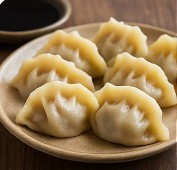

Pork and Chive Dumplings (饺子)

Dough
- 2 cups all-purpose flour
- ¾ cup warm water
Filling
- 1 lb ground pork
- 1 cup Chinese chives
- 1 tbsp ginger
- 1 tbsp soy sauce
- 1 tbsp sesame oil
- ½ tsp salt
- ½ tsp white pepper
Instructions
- Make dough, rest 30 min.
- Mix filling, wrap dumplings.
- Boil or pan-fry to cook.
Other Recipes You Might Like